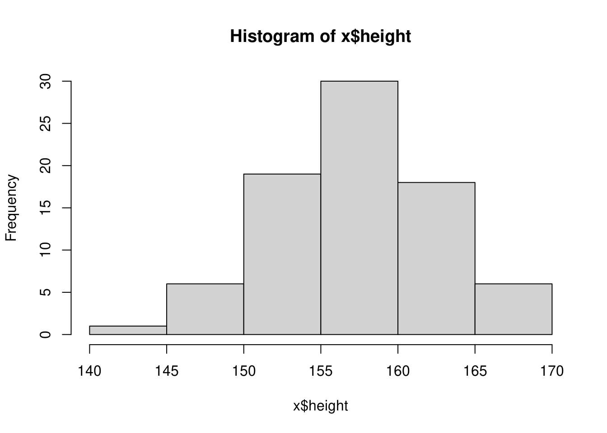

Chapter 1: 度数分布表とヒストグラムで
本講で扱うデータはテキストのP16 図表1-1で示されているデータですが、Rで処理しやすいように以下のように一列にまとめてxというデータフレーム型の変数に格納しておきます。
x## # A tibble: 80 × 1
## height
## <int>
## 1 151
## 2 154
## 3 160
## 4 160
## 5 163
## 6 156
## 7 158
## 8 156
## 9 154
## 10 160
## # … with 70 more rows1.2 ヒストグラムを作る
Rでヒストグラムを描くにはhist()関数を使うことで描けます。同時に階級、度数と階級値などを求めることもできます。
hist <- hist(x$height, include.lowest = FALSE, plot = TRUE)
hist## $breaks
## [1] 140 145 150 155 160 165 170
##
## $counts
## [1] 1 6 19 30 18 6
##
## $density
## [1] 0.0025 0.0150 0.0475 0.0750 0.0450 0.0150
##
## $mids
## [1] 142.5 147.5 152.5 157.5 162.5 167.5
##
## $xname
## [1] "x$height"
##
## $equidist
## [1] TRUE
##
## attr(,"class")
## [1] "histogram"度数分布表として表にしたい場合は下記のように
x %>%
# 階級を求めて、データを階級ごとに分ける
dplyr::mutate(class = cut(height,
breaks = pretty(height, n = nclass.Sturges(height)),
include.lowest = FALSE, right = TRUE)) %>%
# 階級ごとの度数を求める
dplyr::count(class) %>%
# 累積度数、相対度数、累積相対度数を求める
dplyr::mutate(cumsum_n = cumsum(n),
prop = prop.table(n), cumsum_prop = cumsum(prop)) %>%
# 階級値を求める
dplyr::mutate(class_value = as.character(class)) %>%
tidyr::separate(class_value, into = c("l", "h"), sep = ",") %>%
dplyr::mutate(l = as.integer(stringr::str_remove(l, "[[:punct:]]")) + 1L,
h = as.integer(stringr::str_remove(h, "[[:punct:]]")),
mids = (l + h) / 2L) %>%
# 変数名を日本語にする
dplyr::select(`階級` = class, `階級値` = mids,
`度数` = n, `累積度数` = cumsum_n,
`相対度数` = prop, `累積相対度数` = cumsum_prop)1.2.1 階級を求める
with(x, pretty(height, n = nclass.Sturges(height)))## [1] 140 145 150 155 160 165 170 pretty()関数はx引数で指定するデータから階級を求める関数です。n引数で階級を区切る数（階級数）を指定します。ここでは、階級数nはスタージェスの公式から求めています。指定した階級数でデータの範囲を単純に割っている訳ではないことに注意してください。xで指定したデータが階級に収まるように適切な丸め処理を行いますので、指定した階級数どおりの階級が求められるとは限りません。
スタージェスの公式とは、階級数を\(k\)、データのサイズ（数）を\(n\)とした場合、下式で定義されます。
\[k = \log_2(n) + 1\]
Rではnclass.Sturgess()関数が用意されています。
with(x, nclass.Sturges(height))## [1] 8
スタージェスの公式以外にもスコットの選択（nclass.scott()）やフリードマン=ダイアコニスの選択（nclass.FD()）などがあります。
1.2.2 データを各階級に分類する
with(x, cut(height, breaks = pretty(height, n = nclass.Sturges(height))))## [1] (150,155] (150,155] (155,160] (155,160] (160,165] (155,160] (155,160]
## [8] (155,160] (150,155] (155,160] (150,155] (160,165] (155,160] (160,165]
## [15] (155,160] (160,165] (160,165] (165,170] (145,150] (160,165] (150,155]
## [22] (160,165] (155,160] (160,165] (165,170] (150,155] (155,160] (150,155]
## [29] (155,160] (155,160] (155,160] (145,150] (160,165] (150,155] (155,160]
## [36] (160,165] (150,155] (160,165] (150,155] (150,155] (150,155] (150,155]
## [43] (155,160] (145,150] (145,150] (160,165] (165,170] (150,155] (150,155]
## [50] (165,170] (160,165] (160,165] (145,150] (140,145] (155,160] (160,165]
## [57] (155,160] (155,160] (155,160] (160,165] (165,170] (155,160] (155,160]
## [64] (150,155] (155,160] (155,160] (150,155] (155,160] (150,155] (155,160]
## [71] (145,150] (165,170] (150,155] (155,160] (155,160] (155,160] (160,165]
## [78] (155,160] (155,160] (160,165]
## Levels: (140,145] (145,150] (150,155] (155,160] (160,165] (165,170] cut()関数はデータがどの階級に入るかを計算する関数です。breaks引数に任意の階級を指定することも可能です。
1.2.2.1 階級の境界値はどちらに含まれるのか？
cut()関数の出力は、(140,145] (145,150]のように階級間で同じ数値が含まれます。145はどちらの階級に含まれるかは、添えられている括弧で区別できるようになっています。
(140,145]
は「140を超えて145以下」となりますので、次の
(145,150]
は同様に「145を超えて150以下」となりますので、階級間の境界値である145は(140, 145]側に入ります。つまり
(は「超えて」、)は未満」（境界値を含まない）[は「以上」、]は「以下」（境界値を含む）
となっています。cut()関数のinclude.lowestオプションとrightオプションを指定すると下表のように計算結果を変えることができます。
| option | right = TRUE |
right = FALSE |
|---|---|---|
include.lowest = TRUE |
[l,u] ... (l,u] |
[l,u) ... [l,u] |
include.lowest = FALSE |
(l,u] ... (l,u] |
[l,u) ... [l,u) |
例えば最大値と最小値を境界値として含む階級を指定した場合、include.lowest = FALSE, right = FALSEと指定すると最大値が階級に含まれなくなります。
with(x, cut(height, breaks = c(143, 155, 169),
include.lowest = FALSE, right = FALSE))## [1] [143,155) [143,155) [155,169) [155,169) [155,169) [155,169) [155,169)
## [8] [155,169) [143,155) [155,169) [143,155) [155,169) [155,169) [155,169)
## [15] [155,169) [155,169) [155,169) <NA> [143,155) [155,169) [143,155)
## [22] [155,169) [155,169) [155,169) [155,169) [143,155) [155,169) [155,169)
## [29] [155,169) [155,169) [155,169) [143,155) [155,169) [155,169) [155,169)
## [36] [155,169) [143,155) [155,169) [143,155) [143,155) [143,155) [155,169)
## [43] [155,169) [143,155) [143,155) [155,169) <NA> [143,155) [155,169)
## [50] [155,169) [155,169) [155,169) [143,155) [143,155) [155,169) [155,169)
## [57] [155,169) [155,169) [155,169) [155,169) [155,169) [155,169) [155,169)
## [64] [143,155) [155,169) [155,169) [143,155) [155,169) [143,155) [155,169)
## [71] [143,155) [155,169) [143,155) [155,169) [155,169) [155,169) [155,169)
## [78] [155,169) [155,169) [155,169)
## Levels: [143,155) [155,169) 逆にinclude.lowest = FALSE, right = TRUEと指定すると最小値が階級に含まれなくなります。
with(x, cut(height, breaks = c(143, 155, 169),
include.lowest = FALSE, right = TRUE))## [1] (143,155] (143,155] (155,169] (155,169] (155,169] (155,169] (155,169]
## [8] (155,169] (143,155] (155,169] (143,155] (155,169] (155,169] (155,169]
## [15] (155,169] (155,169] (155,169] (155,169] (143,155] (155,169] (143,155]
## [22] (155,169] (155,169] (155,169] (155,169] (143,155] (155,169] (143,155]
## [29] (155,169] (155,169] (155,169] (143,155] (155,169] (143,155] (155,169]
## [36] (155,169] (143,155] (155,169] (143,155] (143,155] (143,155] (143,155]
## [43] (155,169] (143,155] (143,155] (155,169] (155,169] (143,155] (143,155]
## [50] (155,169] (155,169] (155,169] (143,155] <NA> (155,169] (155,169]
## [57] (155,169] (155,169] (155,169] (155,169] (155,169] (155,169] (155,169]
## [64] (143,155] (155,169] (155,169] (143,155] (155,169] (143,155] (155,169]
## [71] (143,155] (155,169] (143,155] (155,169] (155,169] (155,169] (155,169]
## [78] (155,169] (155,169] (155,169]
## Levels: (143,155] (155,169]1.2.3 度数を求める
dplyr::count()関数はtable()関数と同様、個数を数える関数です。table()関数の計算対象はベクトル型ですが、dplyr::count()関数はデータフレーム型が計算対象になります。
with(x, table(cut(height, breaks = pretty(height, n = nclass.Sturges(height)))))##
## (140,145] (145,150] (150,155] (155,160] (160,165] (165,170]
## 1 6 19 30 18 6x %>%
# 階級を求めて、データを階級ごとに分ける
dplyr::mutate(class = cut(height,
breaks = pretty(height, n = nclass.Sturges(height)))) %>%
# 階級ごとの度数を求める
dplyr::count(class)## # A tibble: 6 × 2
## class n
## <fct> <int>
## 1 (140,145] 1
## 2 (145,150] 6
## 3 (150,155] 19
## 4 (155,160] 30
## 5 (160,165] 18
## 6 (165,170] 61.2.4 累積度数、相対度数、累積相対度数を求める
cumsum()関数は累積和を計算する関数です。
with(x, cumsum(table(cut(height, breaks = pretty(height, n = nclass.Sturges(height))))))## (140,145] (145,150] (150,155] (155,160] (160,165] (165,170]
## 1 7 26 56 74 80 prop.table()関数は相対度数を計算する関数です。
with(x, prop.table(table(cut(height, breaks = pretty(height, n = nclass.Sturges(height))))))##
## (140,145] (145,150] (150,155] (155,160] (160,165] (165,170]
## 0.0125 0.0750 0.2375 0.3750 0.2250 0.0750 prop.table()関数の計算結果をcumsum()関数に渡すことで相対度数の累積和（累積相対度数）を求めることができます。
with(x, cumsum(prop.table(table(cut(height, breaks = pretty(height, n = nclass.Sturges(height)))))))## (140,145] (145,150] (150,155] (155,160] (160,165] (165,170]
## 0.0125 0.0875 0.3250 0.7000 0.9250 1.00001.2.5 階級値を求める
階級値は階級の文字列から下限と上限の境界値を抜き出し、単純に下式で平均値を求めています。
\[\frac{(\mbox{下限} + 1) + \mbox{上限}}{2}\]
手順としては以下のようにしています。
as.character()関数で 階級（class）を文字型に変換し、新しい変数（class_value）を作成する
tidyr::separate()関数で文字型の変数（class_value）を,の前後で二つの変数（l,h）に分割する
stringr::str_remove関数で二つの変数（l,h）から(や]を取り除きas.numeric()関数で文字列から数値に変換する
- 数値に変換された二つの変数から（
l,h）平均値を求める
x %>%
# 階級を求めて、データを階級ごとに分ける
dplyr::mutate(class = cut(height,
breaks = pretty(height, n = nclass.Sturges(height)),
include.lowest = FALSE, right = TRUE)) %>%
# 階級ごとの度数を求める
dplyr::count(class) %>%
# 階級値を求める
dplyr::mutate(class_value = as.character(class)) %>%
tidyr::separate(class_value, into = c("l", "h"), sep = ",") %>%
dplyr::mutate(l = as.numeric(stringr::str_remove(l, "[[:punct:]]")),
h = as.numeric(stringr::str_remove(h, "[[:punct:]]"))) %>%
dplyr::mutate(mids = ((l + 1) + h) / 2)## # A tibble: 6 × 5
## class n l h mids
## <fct> <int> <dbl> <dbl> <dbl>
## 1 (140,145] 1 140 145 143
## 2 (145,150] 6 145 150 148
## 3 (150,155] 19 150 155 153
## 4 (155,160] 30 155 160 158
## 5 (160,165] 18 160 165 163
## 6 (165,170] 6 165 170 168